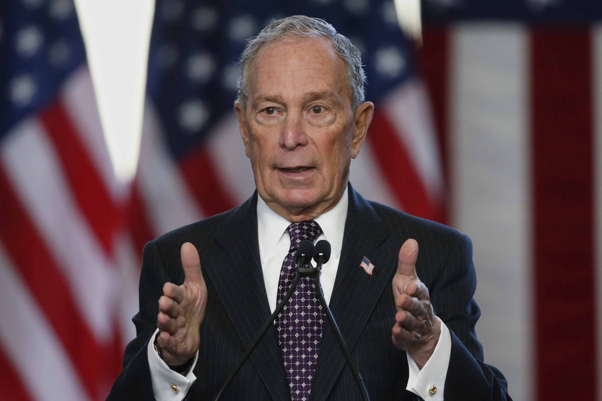
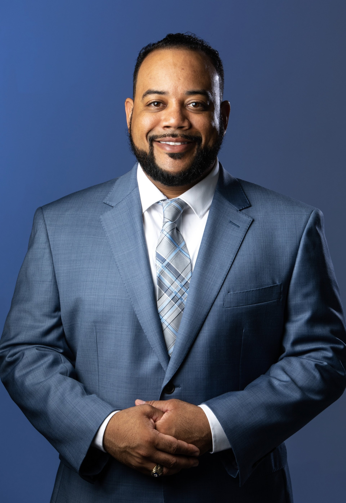

|
|
Joe Biden

Overview:
- Former Vice President under President Obama
- Known for his ability to connect with working-class voters, and representing the moderate platform for the Democrats
- Signature Issues: restoring America’s standing on the global stage, strengthening economic protections for low-income workers, and being tough on gun control
Stance on Policy:
- Gun Safety Plan joebiden.com/gunsafety/
- Ban manufacture and sale of assault weapons and high-capacity magazines.
- Buy back the assault weapons and high-capacity magazines already in our communities
- Restrict the number of firearms an individual may purchase per month to one.
- End the online sale of firearms and ammunitions.
- Enact universal background check
- Incentivize state “extreme risk” laws
- Prohibit the use of federal funds to arm or train educators to discharge firearms
- Require firearms owners to report if their weapon is lost or stolen.
- Direct the ATF to issue an annual report on firearms trafficking.
- Require gun owners to safely store their weapons.
Micheal Bloomberg

Overview:
- Former mayor of New York City and has a networth of 54.5 billion
- Most known for his funding and firm stance on gun reform and environmental groups
- Many political critics describe him as a fiscal conservative and social democrat
Stance on Policy:
- Gun Safety Plan www.mikebloomberg.com/policies/gun-safety
- Universal Background Checks
- Reinstate the federal ban on assault weapons and high-capacity magazines.
- Require secure storage of firearms.
- Ban all guns in K-12 schools, colleges, and universities – except for law enforcement.
- Require gun buyers to be at least 21 years old to buy handguns and semi-automatic rifles and shotguns.
- Pass a federal red flag law that expands extreme risk orders to 50 states.
- Require every gun buyer to get a permit before making a purchase.
- Fund gun violence research
- Repeal the Protection of Lawful Commerce in Arms Act (PLCAA) so that gunmakers and gun dealers will no longer have broad immunity from civil lawsuits.
Pete Buttigieg

Overview:
- Mayor of South Bend, Indiana, a combat veteran, and would be the youngest and first openly gay president in U.S. history
- Most known for energizing and connecting with younger generations and having more of a moderate stance
- Signature issues are Medicare-For-All-Who-Want-It, tough environmental policies, and more economic opportunity for the midwest
Stance on Policy:
- Gun Safety Plan peteforamerica.com/issues/#GunLaws
- Institute universal background checks - (hyperlink to policy page)
- Ban assault weapons and high-capacity magazines
- Enact red flag laws (also known as extreme risk laws) that disarm at-risk individuals and allow friends and family to intervene when they observe warning signs
- Close the “boyfriend loophole” to keep guns out of the hands of domestic abusers
- Close the “Charleston loophole” to allow the FBI additional time to complete every background check
- Close the hate loophole to prohibit people convicted of hate crimes from acquiring or possessing firearms
- Hold the gun industry accountable by repealing the Protection of Lawful Commerce in Arms Act (PLCAA) to end gun industry immunity
- Establish a nationwide gun licensing system
- Resume federal funding for gun violence research
- Invest in evidence-based urban gun violence intervention programs proven to work
Amy Klobuchar

Overview:
- Has served in the Senate for 14 years representing Minnesota
- Her signature issues are rebuilding infrastructure, lowering drug prices, and strengthening log-term care for seniors
Stance on Policy:
- Gun Safety Plan medium.com/@AmyforAmerica/turning-ideas-into-action-senator-klobuchar-on-gun-violence-57fb7bc94d67
- Instituting universal background checks by closing the gun show loophole.
- Banning bump stocks that can increase a semiautomatic rifle’s rate of fire to 700 rounds per minute.
- Banning high capacity magazines that hold more than 10 rounds of ammunition.
- Quickly raising the age to buy military-style assault weapons from 18 to 21 and fighting to ban the sale of assault weapons.
- Providing grants to states to implement extreme risk provisions to empower families and law enforcement to keep guns away from people who show signs of threatening behavior.
- Closing the “Charleston loophole” by giving law enforcement additional time to complete background checks.
- Closing the “boyfriend loophole” by preventing people who have abused dating partners from buying or owning firearms.
- Establishing a waiting period for sales of handguns and assault rifles, which law enforcement can waive in the case of an emergency.
- Prohibiting the online publication of code for 3D printing firearms.
- Holding manufacturers and distributors of gun kits to the same standards as those of completed firearms.
- Providing funding for the Centers for Diseases Control and Prevention to conduct research on firearm safety and gun violence prevention.
Bernie Sanders

Overview:
- Has served in the U.S. Senate and U.S. house for a combined 29 years representing the state of Vermont
- Mostly known for being a socialist democrat based on his progressive policy platform
- Signature issues are Medicare-For-All, the Green New Deal, and College For All
Stance on Policy:
- Gun Safety Plan berniesanders.com/issues/gun-safety/
- Expand background checks.
- Ban the sale and distribution of assault weapons.
- Prohibit high-capacity ammunition magazines.
- Implement a buyback program to get assault weapons off the streets.
- Crack down on “straw purchases” where people buy guns for criminals.
- Support “red flag” laws and legislation to ensure we keep guns out of the hands of domestic abusers and stalkers.
- Ban the 3-D printing of firearms and bump stocks.
Tom Steyer

Overview:
- Tom Steyer is an American hedge fund manager, philanthropist, environmentalist, liberal activist, and fundraiser
Stance on Policy:
- Gun Safety Plan tomsteyer.com/we-can-end-gun-violence/
- National assault weapon registry
- Requiring a license for all gun ownership
- Classifying white supremacists as domestic terrorists
- Create a new Office of Gun Violence Prevention
Donald Trump
Overview:
- Current President of the United States
- His signature issues are immigration, economy, and healthcare
Stance on Policy:
- Gun Safety Plan
- End gun-free zones in schools & military bases
- No guns for people on terrorist watch-list
- Make concealed-carry permits valid across all states
Elizabeth Warren
Overview:
- U.S. senator from Massachusetts, having served the state since 2013
- Former Harvard Law Professor and head of the Consumer Financial Protection Bureau under President Obama
- Representing the more left side of the Democratic Party, Warren is a supporter of Medicare-For-All and encourages cracking down on corporate corruption
Stance on Policy:
- Gun Safety Plan elizabethwarren.com/plans/gun-violence
- Requiring universal background checks.
- Requirement to report bulk sales to nearly all gun sales
- Prosecuting gun traffickers
- Revoking licenses for gun dealers who break the rules
- Creating a federal licensing system
- Increasing taxes on gun manufacturers
- Ban assault weapons and high capacity magazines
- Passing extreme risk protection laws
- Holding gun manufacturers strictly liable for the harm they cause through a federal private right of action.
Bill Weld
Overview:
- Former Governor of Massachusetts
- His signature issues are that he favors fiscal restraint, free trade, and moderate immigration reform; has endorsed steps to legalize marijuana.
Stance on Policy:
- Gun Safety Plan weld2020.org/wp-content/uploads/2019/11/weld2020_policypaper_firearms.pdf
- Red Flag laws, if done correctly, make a lot of sense
- “Universal” background checks are easier said than done, raise some fundamental concerns, and may not be the overarching solution many seem to believe.
- The Supreme Court’s Heller decision in 2008 confirmed that the 2nd Amendment’s protection of the right to bear arms applies to individuals.
Andrew Yang

Overview:
- An entrepreneur and philanthropist
- Yang’s signature issue is a Universal Basic Income, a policy that mandates every single American would receive a monthly sum of $1,000 from the government
Stance on Policy:
- Gun Safety Plan yang2020.com/policies/gun-safety/
- Create a common sense licensing policy, requiring investment and safety precautions
- Prevent dangerous individuals from owning guns
- Ban the manufacture, sale, and transfer of weapons and accessories that make it easier for individuals to commit mass shootings
- Enhance mental health resources available to people who need help
- Provide deescalation training and mental health professionals to law enforcement agencies to prevent interactions from becoming deadly
Broward County Candidates
Judges running for Clerk of Circuit Court
Judge Paul L. Backman

Overview:
- A retired Broward Circuit Judge who was on the bench more than 30 years.
- Backman received his B.A. degree from Long Island University in 1971 and his law degree from the John Marshall School of Law in 1975
- Backman began his career in 1975 as a sole practitioner working in civil law. He then became a Broward County Court judge in 1985.
Broward County Clerk Brenda D. Forman
Overview:
- She studied at Broward College and Union Institute University
- Brenda Forman is the current Broward County Clerk and was the first African American and the first elected female clerk in the history of Broward County
- She is currently under criminal investigation whether she made false statements under oath, as well as “additional complaints,” the governor’s office confirmed Friday. (sun-sentinel.com/local/broward/fl-ne-forman-executive-assignment-20190405-story.html)
Howard C. Forman

Overview:
Christopher Charles Hugley

Overview:
- He was born in Fort Lauderdale, Florida, and has “been serving the needs of others since his childhood”
- “He raises awareness and funds for issues including youth services, criminal justice reform, reading and education, mentoring, cultural arts, homelessness, and other social causes”
Anthony Robbins
Overview:
- Criminal Defense Investigator who founded the firm of Anthony L. Robbins, P.A. a South Florida Based Criminal Defense Investigation Firm
- Robbins, was nominated by former Florida Governor Jeb Bush to serve on the U.S Selective Service System Boardand was appointed by President George W. Bush to serve on the US Selective Service System as a Board Member, representing the residents of the State of Florida
Running for Broward County Sheriff
Sheriff Gregory Tony
Overview:
- Played college football for Florida State University and graduated with a degree in criminology
- He began his law enforcement career in 2005 with the Coral Springs Police Department where he served on the SWAT team for five years and rose to the rank of sergeant.
- He ran Blue Spear Solutions, which is a private business that trains security to respond to active shooter situations. In January 2019, he was sworn in as Broward County’s Sheriff.
Scott Israel
Overview:
- Scott Israel served as the head of the Broward Sheriff's office from 2013 until 2019. He was removed by an executive order from Governor Desantis.
- Throughout his term, two mass shootings occured: the Fort Lauderdale airport shooting and the Marjory Stoneman Douglas school shooting
Wayne Clark
Overview:
- Wayne is a veteran and Broward County attorney with fifteen years of legal experience in our local, state and federal legal systems
- He also served two years as a Staff Attorney for The Honorable Robert Rosenberg and The Honorable Victor Tobin in the 17th Judicial Circuit.
Running for Supervisor of Elections
Mitchell Caesar

Overview:
- He is an Executive Board Member on the Democratic National Convention, Chairman of the Florida Democratic Party and founder and president of the Tamarac Democratic Club.
- For 20 years, Ceasar was the chair for the Broward Democratic Party Ceasar was also one of the final 28 delegates who provided President Barack Obama with his historic Democratic nomination.
Chad Klitzman
Overview:
- He is an attorney, a screenwriter, a Broward native, a devoted frequent flyer, and, most importantly, he cares deeply about the integrity of the electoral process.
- Chad graduated summa cum laude from the University of Pennsylvania with a degree in Political Science and earned his law degree at Columbia University
- He wants to modernize elections and has visited all 67 election offices in Florida to find the most effective ways
Timothy Lonergan
Overview:
- He was the mayor Oakland Park and the president of Broward League of Cities
- He has worked in the Medicare Operations department of a major healthcare insurance company for 33 years
Joe Scott

Overview:
- Former Army Captain who works as a technologist for a Global 500 tech company he joined in 2016.
- He completed the computer science engineering track at the U.S. Military Academy at West Point and the Executive MBA program at Villanova University. He was awarded the Bronze Star Medal while deployed to Iraq
- His prior business experience includes six years in operations management and he consults government agencies as they transform their operations by integrating technologies that improve security, efficiency and sustainability.
Ruth Carter-Lynch

Overview:
- Ruth holds an MBA Certificate in Business Management/Executive Leadership from St. Thomas University, Minneapolis, MN. Ruth earned her Bachelor of Science in Social Science from Almeda University
- She holds more than 30 years of experience in the corporate world
School Board Elections
Stephen Bryan Barrow

Overview:
- He has over 5 years of volunteer service in the Broward County Public Schools system, including 2 years in leadership positions and over 1,500 total volunteer hours
Narnike Grant

Overview:
- Narnike has a Bachelors degree in Political Science from Florida Atlantic University, a Masters Degree in Cross Disciplinary Studies with a major in Conflict Resolution from Nova Southeastern University
- Has been and continues to be the PTO/PTSO President, Vice President, and Corresponding Secretary for the past 7 years at three Broward County Schools her children attend and have attended.
Debra Hixon
Overview:
- Debbi Hixon is a 31 year Nationally Board Certified Broward County public school teacher running for the Broward County School Board to bring strong leadership and positive change
- She is the widow of Chris Hixon, the slain Hero Athletic Director at Marjory Stoneman Douglas.
- Her goals are to:
- Bring safety and security to our schools.
- Value and lift up our teachers.
- Build open and positive relationships between schools and our communities.
- Expand mental health support in the schools.
Jeff Holness
Overview:
- He has been an active lead educator in Broward County for many years, working for over 20 years as a teacher and assistant principal designee for Broward County Schools.
- He is currently a small business owner and director of Kumon Math and Reading Center of Coral Springs-South
- He served as chair of the City of Plantation Parks and Recreation Board and has also served for many years as School Advisory Council member and chair for several schools in Broward County
Laurie Kandel

Overview:
- After attending Brandeis University for her first two years of college, Laurie completed both her Bachelor's degree with high honors and her law degree at the University of Florida.
- She is a member of the Florida Bar and started practicing law in a Gainesville law firm.
- She volunteered at Hawkes Bluff Elementary and Everglades Elementary, where she taught children that had been struggling to read and Laurie has worked at area synagogues, teaching children religious values and Hebrew in the classroom
Anthony Robbins
Overview:
- Criminal Defense Investigator who founded the firm of Anthony L. Robbins, P.A. a South Florida Based Criminal Defense Investigation Firm
- Robbins, was nominated by former Florida Governor Jeb Bush to serve on the U.S Selective Service System Boardand was appointed by President George W. Bush to serve on the US Selective Service System as a Board Member, representing the residents of the State of Florida